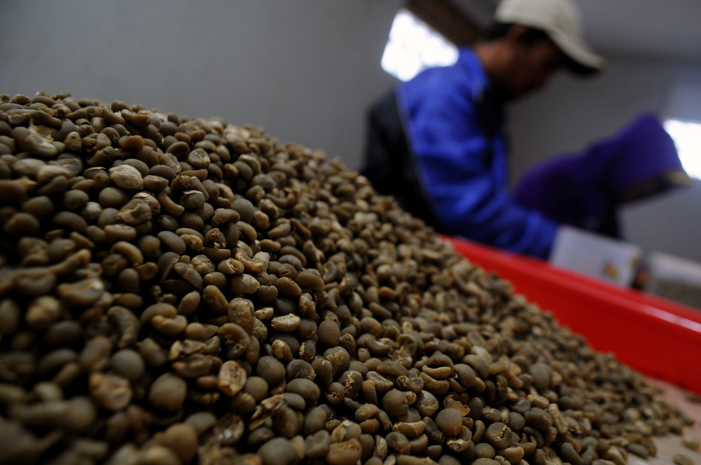

Potensi Kopi di Jambi
Kopi merupakan salah satu komiditas di dunia yang dibudidayakan lebih dari 50 negara. Dua varietas pohon kopi yang dikenal secara umum yaitu Kopi Robusta (Coffea canephora) dan Kopi Arabika (Coffea arabica).

Mengenal Kopi
Biji kopi adalah biji dari tumbuhan kopi dan merupakan sumber dari minuman kopi. Warna bijinya adalah putih dan sebagian besar berupa endosperma. Setiap buah umumnya memiliki dua biji. Buah yang hanya mengandung satu biji disebut dengan peaberry dan dipercaya memiliki rasa yang lebih baik. Dua varietas yang paling banyak dibudidayakan yaitu kopi arabika (75%) dan kopi robusta (20%). Kopi arabika mengandung sekitar 0.8-1.4 persen kafein, sedangkan kopi robusta 1.7-4% kafein. Kopi merupakan salah satu tanaman perkebunan dan komoditas ekspor utama dari setengah negara berkembang di dunia.
-
Klasifikasi dari Kopi :
-
Kerajaan : Plantae -
Divisi : Magnoliophyta -
Kelas : Magnoliopsida -
Ordo : Gentianacea -
Famili : Rubiaceae -
Genus : Coffea -
Spesies : Coffea arabica, Coffea robusta, Coffea liberica
Pohon kopi dapat tumbuh hingga mencapai tinggi 10 meter. Tumbuhan kopi umumnya ditanam dengan jarak antara pohon sekitar dua meter. Kopi arabika dan robusta masing-masing memiliki kebutuhan lingkungan yang berbeda; kopi arabika mengutamakan termperatur yang lebih dingin dan kopi robusta membutuhkan temperatur yang lebih hangat. Seperti halnya tumbuhan berbuah lainnya, kopi membutuhkan musim kering dan matahari yang cukup banyak ketika mulai berbuah.
Kandungan dalam biji kopi
Kafein
Kafein ditemukan didalam beberapa biji daun dan buah dari beberapa tanaman, kopi adalah salah satu tanaman yang memiliki kandungan kafein yang paling sering dinikmati oleh manusia, kafein diklasifikasikan sebagai drug dan diakui aman dalam dosis tertentu, melebihi dosis yang ditentukan akan menyebabkan ketergantungan, dalam konsumsi yang sudah menahun kafein dapat menyebabkan timbulnya penyakit seperti kanker dan masalah gangguan tidur.
Ethyphenol
Zat yang satu ini mungkin asing bagi kita, namun zat ini seperti adalah aroma khusus pada kopi, zat ini mirip dengan tar dan mengandung pheromone.
Quinic Acid
Rasa asam pada kopi ditentukan pada jumlah zat yang satu ini, kadar quinic acid pada kopi terkadang jumlahnya berbeda-beda, zat ini digunakan dalam ilmu kedokteran sebagai bahan pembuatan obat flu.
Dicaffeoylquinic Acid
Zat ini adalah salah satu zat antioksidan yang dapat menangkal radikal bebas. Meskipun kadar antioksidan didalam biji kopi tidak sebanyak tumbuhan obat lain, namun kopi adalah salah satu suplayer antioksidan paling banyak
Dimethyl Disulfide
Pada biji kopi yang masih hijau atau belum dikeringkan dan di sangrai, kandungan senyawa ini termasuk senyawa yang banyak, zat ini lah yang membuat kotoran manusia berbau, mirip dengan senyawa sulfur.
Acetylmethylcarbinol
Zat yang satu ini adalah zat yang membuat kopi terasa gurih di lidah, zat ini banyak ditemukan pada mentega.
Putrescine
Zat yang dihasilkan oleh bakteri E.Coli ini adalah bakteri yang membuat sesuatu menjadi busuk, zat ini adalah hasil dari pembusukan dari bakteri tersebut.
Trigonelline
Zat yang satu ini adalah zat yang dapat melindungi gigi, meski kadang seorang peminum kopi agak hitam gigi nya, namun zat ini yang membuat gigi peminum tidak gampang berlubang.
Niacin
Zat yang satu ini adalah senyawa yang kurang baik bagi tubuh, karena senyawa ini dapat menyerap vitamin-vitamin dalam tubuh, sedangkan vitamin sangat dibutuhkan tubuh untuk proses-proses yang ada didalam tubuh, oleh karenanya meminum kopi hanya di anjurkan paling banyak 2-3 kali sehari.
Produksi kopi di Provinsi Jambi
Beberapa jenis kopi seperti Robusta dan Excelsa telah berkembang cukup pesat dan menjadi komoditi unggulan daerah Jambi. Kabupaten Tanjung Jabung Barat (Tanjabbar) memiliki kebun kopi excelsa yang cukup luas, luasnya sekitar 2.423,8 hektare dan tersebar di 6 kecamatan. Kopi jenis Ekselsa (Excelsa) ini memang jenis kopi yang paling banyak dibudidayakan di Jambi, Kopi Ekselsa sangat jarang kita temui di daerah lain di Indonesia, namun Orang Jambi telah mengembangkan perkebunan kopi jenis Ekselsa sudah puluhan tahun lamanya, sekitar 60-70 Tahun.
Hasil dari komoditi kopi ekselsa ini paling banyak di ekspor ke Malaysia dan Singapura. Wilayah penghasil kopi lainnya di daerah Jambi yaitu di Kecamatan Pengabuan seluas 362 ha, Kecamatan Bram Itam 223 hektare, Kecamatan Senyerang seluas 176,5 hektare, dan Kecamatan Kuala Betara seluas 105 hektare. Sementara KecamatanTungkal Hilir hanya seluas 17 hektare. Sisanya ditanam secara swadaya oleh petani dan tersebar di kecamatan lainnya.
Pengolahan biji kopi
Ketika buah mulai matang, umumnya dipetik dengan tangan dan dibutuhkan ketelatenan petani dalam memilih buah yang benar-benar matang. Selain pemetikan secara selektif, metode lain yaitu petani memetik seluruh buah pada satu cabang, baik buah yang matang maupun tidak, untuk kemudian diseleksi di tempat pengolahan.
Di fasilitas pengolahan kopi, buah kopi melalui proses pemisahan daging buah dari bijinya, lalu direndam dalam air selama dua hari untuk melarutkan sisa daging buah dan pulp yang mungkin masih menempel pada biji. Selain menggunakan metode perendaman, biji kopi juga dapat dijemur di bawah sinar matahari hingga kering untuk memisahkan daging buah dan bijinya.